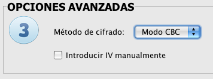

Proceso de Descifrado mediante AESphere
El proceso de descifrado está claramente diferenciado en
tres sencillos pasos.
 Entrada y clave.
Entrada y clave.
A la hora de elegir la entrada tenemos tres posibilidades: base64, Hexadecimal y Archivo

- Si elegimos la opción de base64 se habilita el área de texto para introducir como entrada un texto cifrado. Este texto debe ser obligatoriamente la salida del proceso de cifrado, ya que el programa se encargará de comprobarlo y, en caso de no ser un texto cifrado, el programa lo detectará e informará de ello.
- Esta misma comprobación se realiza cuando la entrada es en hexadecimal o en archivo. Eligiendo hexadecimal, la aplicación sólo permitirá introducir caracteres de este tipo y eligiendo la opción "Archivo", se habilitará un botón para buscar un archivo cifrado, o bien un archivo de texto que contenga un texto cifrado.

En cuanto a la clave, también nos encontramos ante tres posibilidades, Texto ASCII, Hexadecimal y Archivo (base64).
Hemos de elegir el tamaño que tendrá nuestra clave: 128, 192 ó 256 bits. Este tamaño provocará que el proceso de descifrado tenga más o menos rondas: 10, 12 ó 14 respectivamente.
Obviamente, si deseamos que el descifrado dé el resultado esperado, debemos elegir la misma clave que usamos a la hora de realizar el cifrado (la aplicación no permitirá itroducir claves superiores del tamaño elegido).
 Salida.
Salida.
Una vez elegida la entrada y la clave, tendremos que elegir el formato de nuestra salida del descifrado.
La salida puede ser igualmente ASCII, Hexadecimal y Archivo. De la elección del usuario dependerá el formato que el programa dará a la salida. La opción "Archivo" habilita un campo de texto para escribir la ruta de nuestro archivo descifrado y un botón por si lo que se desea es buscar la ruta y escribir el nombre del nuevo archivo.

 Opciones Avanzadas.
Opciones Avanzadas.
Por último, deberemos elegir el método de cifrado y el modo de ejecución.

En el método de cifrado (al igual que en el caso de la clave), debemos elegir la misma opción que elegimos en el cifrado, ya que si no, el resultado no sería el esperado. Eligiendo el método CBC, se habilita el check de introducir manualmente el IV (Vector de Inicialización), el cual deberá introducirse manualmente para que el proceso se complete satisfactoriamente.
Desde el menú "Archivo" podremos cargar y guardar claves, y desde el menú "Editar" podremos copiar y pegar los campos que necesitemos.

La aplicación comprobará que se están introduciendo todos los campos obligatorios para pasar al siguiente paso e informará al usuario en caso de que alguno haya sido introducido incorrectamente
Mediante el botón "Cancelar" volveremos a la pantalla principal de la aplicación
Para una información más detallada y teórica de este proceso consulte los siguientes términos:
Descifrado,Cifrado, AddRoundKey, MixColumns, ShiftRows, SubBytes, Base64, ECB, CBC.